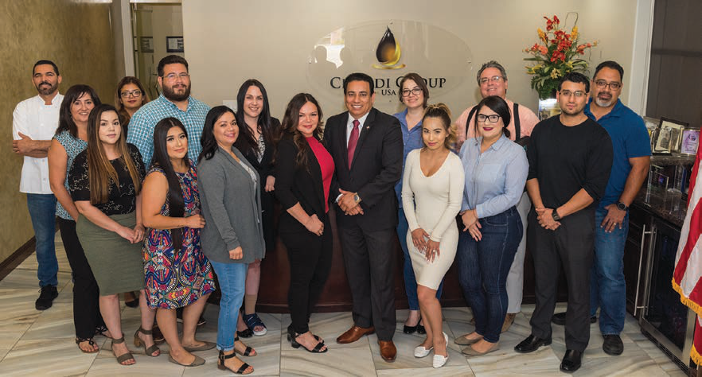
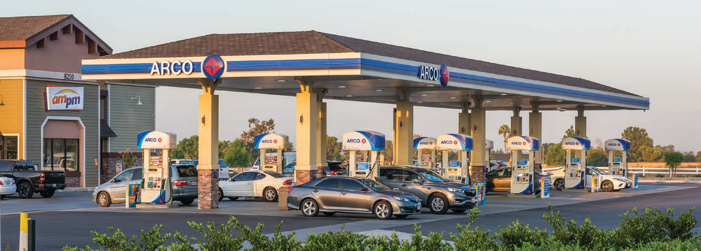

01
Economic Growth
Projects are selected for their ability to activate local commerce, support employment, and build stronger regional economic momentum.
Projects & Developments
Creating transformative developments that strengthen communities, support economic growth, and shape California's future.
Chandi Group USA approaches development as an enterprise platform, not a series of isolated sites. We align capital, land, civic relationships, operators, and technical partners around projects with long-term commercial relevance and measurable public benefit.
That discipline gives each initiative the character of an institutional asset while preserving the entrepreneurial speed that has defined the organization from the beginning.
Development Philosophy
A horizontal editorial sequence built around value creation, civic responsibility, and disciplined execution.
Projects are selected for their ability to activate local commerce, support employment, and build stronger regional economic momentum.
We shape opportunities with disciplined underwriting, durable demand drivers, and the clarity investors expect from enterprise-grade development.

Every site is evaluated for how it can improve daily life, expand access, and contribute to the long-term health of its surrounding community.

Resilient planning, efficient operations, and future-ready infrastructure help each project remain relevant across market cycles.

Design decisions are guided by utility, civic presence, operational clarity, and the quiet confidence of a premium corporate environment.

Franchise groups, municipalities, technical consultants, construction teams, and capital partners work within one coordinated delivery platform.
Development Expertise
Interactive categories reveal the operating logic behind Chandi Group USA's development portfolio.
Expertise Focus
Large-format commercial environments require market intelligence, tenant alignment, traffic strategy, and long-term ownership discipline. Chandi Group USA brings those capabilities into one coordinated development approach.
A concise showcase for high-visibility initiatives and opportunity areas across the development pipeline.

The Development Journey
A milestone-driven process that turns ambition into accountable execution.
Define purpose, market role, stakeholders, and long-term value objectives.
Align land use, approvals, civic dialogue, program strategy, and capital priorities.
Translate ambition into a refined spatial experience with practical commercial logic.
Build technical certainty around infrastructure, cost, schedule, and constructability.
Manage delivery with disciplined oversight, vendor coordination, and quality control.
Open the asset with operational readiness, stakeholder alignment, and lasting value.
Past Projects
Presented as an editorial archive rather than a property list.

Chandi Group USA's operating foundation informs how the organization evaluates access, traffic, service, and long-term asset performance.
Past projects connect national brand standards with local-market execution, creating environments that perform for operators and customers.
The archive reflects a consistent ability to identify overlooked potential and turn it into useful, commercially resilient development.
Partners & Collaborators
Transformative projects depend on trusted collaboration across public, private, technical, and operating partners.
Future Development Vision
Chandi Group USA is advancing a development pipeline focused on premium spaces, regional economic strength, and generational value creation.
Create What Lasts
Creating developments that inspire progress and generate lasting value for generations.